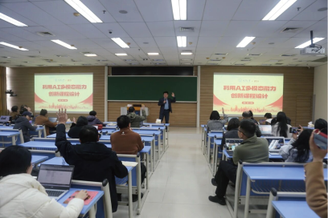
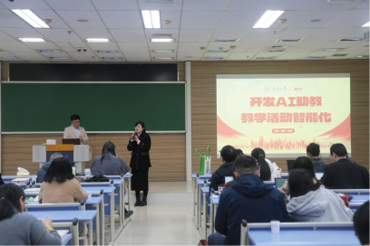
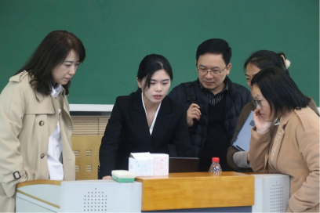
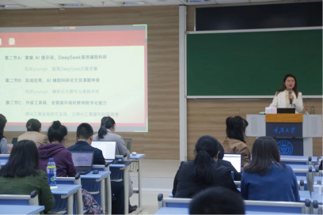
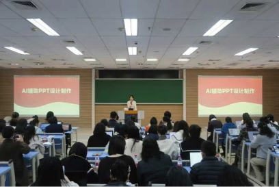

自2025年3月24日起，联合秋叶集团推出系列培训10期
充分利用教师碎片化时间（午餐），提升其数智素养。内容紧密围绕高校教师在教育教学、科学研究、行政管理等核心场景中的需求展开。其主题丰富多元，涵盖了 AI 驱动的课程创新与学情分析、智能体开发、数字人构建、提升科研效率的 AI 组合策略，以及 AI 赋能课题申报全流程优化等。活动期间，老师们参与热情高涨





教师数字素养培训
案例3
重庆大学